Ukrainian children SOS
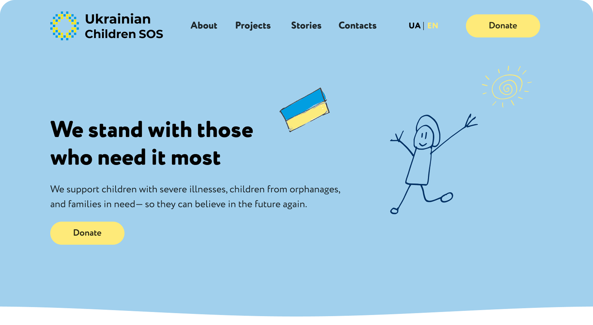
About
project
Ukrainian Children SOS is a London-based charity supporting Ukrainian children affected by the war. The founder is a Ukrainian living in the UK, who reached out with a request to redesign their outdated and non-functional website.
Client: Ukrainian Children SOS Foundation
Year: 2025
Role: UX/UI Designer (solo project)
Location: London


Responsibilities
I led the redesign of the website to improve trust and simplify the donation experience. My focus was on understanding why users avoided donating online and designing a clearer, faster, and more reliable journey that encourages action.
Challenges
Users struggled to trust the website and often avoided donating through it. The interface felt confusing, some elements didn’t work properly, and the overall experience lacked clarity and credibility. As a result, users preferred to donate through other channels instead of the site. The main challenge was to rebuild trust and create a donation flow that feels simple, safe, and immediate, while balancing a warm, child-friendly tone with a professional and reliable look.
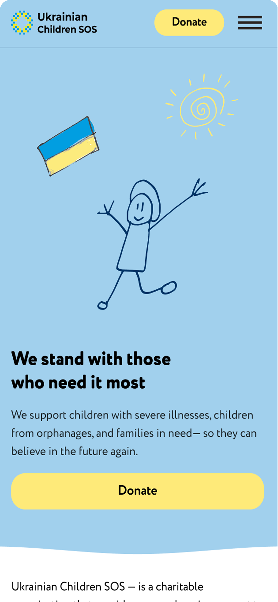
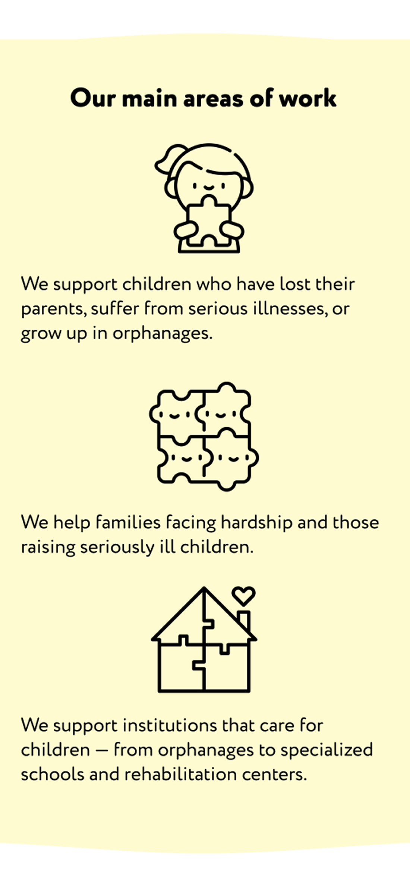
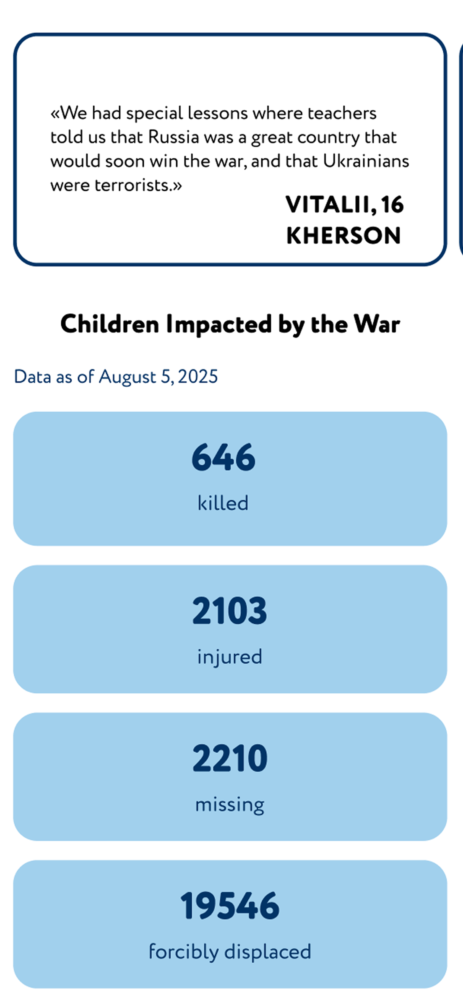
UX Research
& Insights
I conducted user research to understand what influences people’s decision to trust and donate online.
Key insights included that users:
- value transparency and want to see how funds are spent;
- feel more confident when secure payment options like PayPal and Apple Pay are available;
- appreciate seeing real people, the team, founders, and stories of children;
- clear reports, team photos.
User Persona
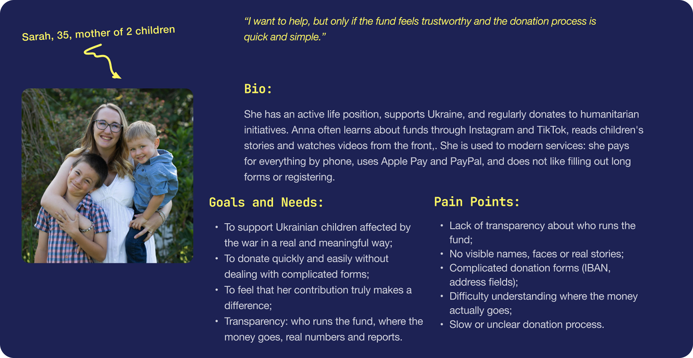
This persona represents users who are emotionally motivated to help but need a clear, fast, and trustworthy donation experience.
→ Users need to quickly feel an emotional connection through real stories;
→ The donation process must be simple, fast, and require minimal effort;
→ Transparency is essential to build trust (team, reports, clear information).
Information
Architecture

→ Persistent “Donate” CTAs across pages for faster action;
→ Content reorganized to avoid long paragraphs and overwhelming layouts;
→ Children's Stories were moved into the main navigation and given a dedicated page so users can easily discover and explore them.
User Flow

I focused on the donation journey as the key user flow, since it is the most critical action for both users and the organisation.The flow highlights how users discover the foundation, build trust through content, and move seamlessly towards making a donation.
Wireframes
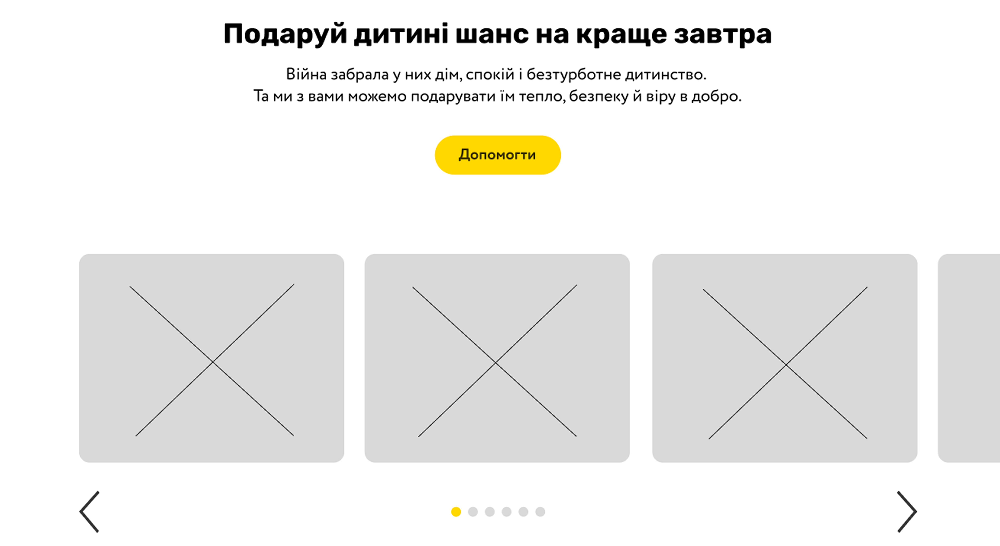
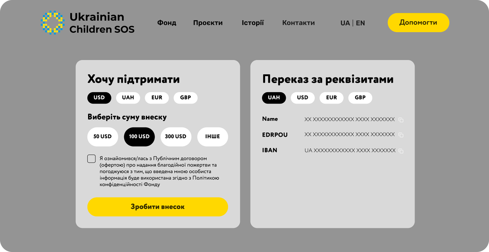
Final Design (UI)
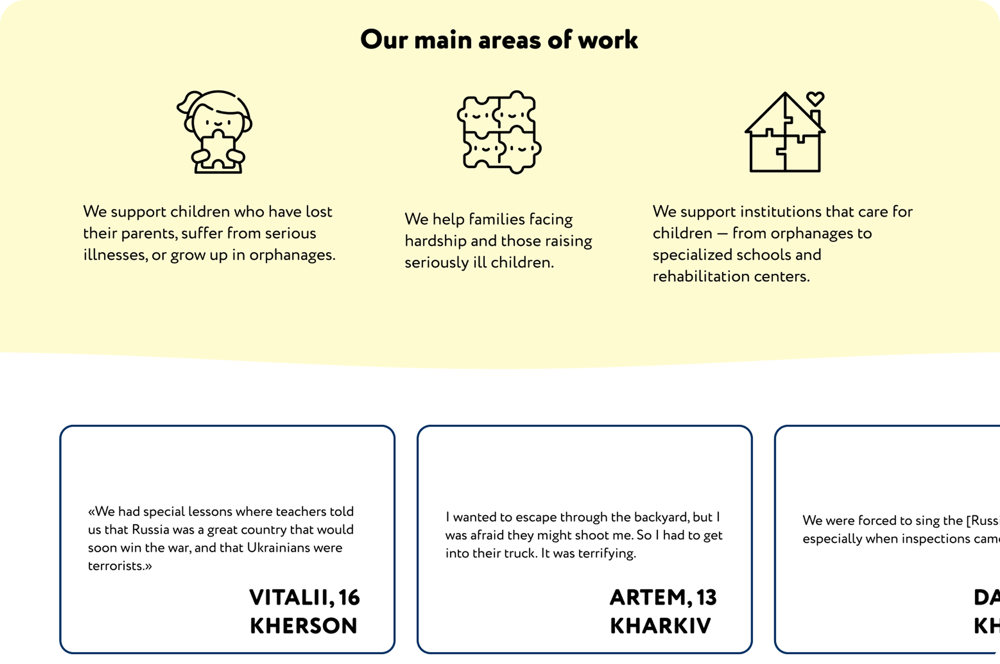
I used a soft blue and yellow palette to create a calm and safe environment, helping reduce emotional pressure and increase trust.
A clean, highly readable font improves accessibility and ensures users can quickly understand key information.
The “Donate” button is consistently visible across the interface to support quick decision-making and reduce friction in the user journey.
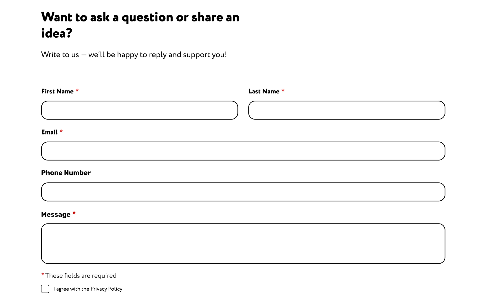


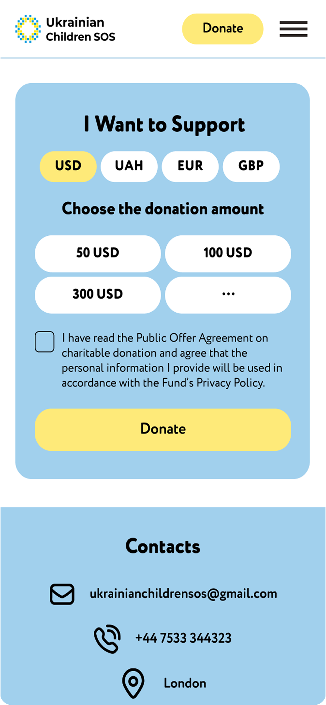
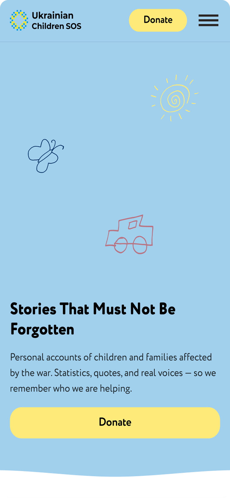
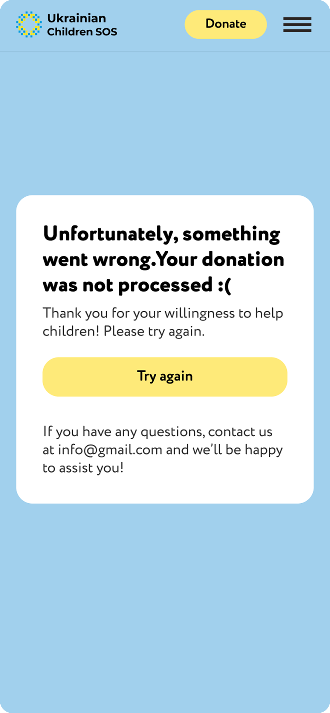